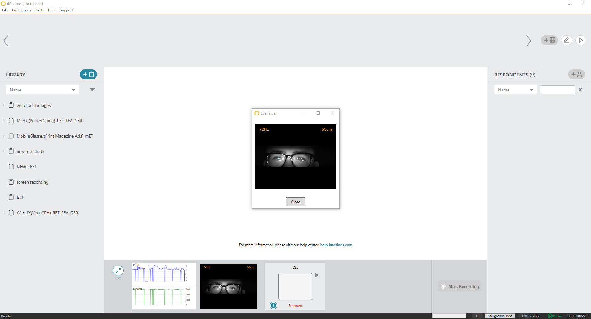

Eyetracking
Using the Eyetracker
iMotions is intended to be a two-part workstation. The participant will be seated at the leftmost computer and the experimenter will be seated at the rightmost computer. In order to do this you will have to make sure the computers are linked. Unless you make any changes, this will be the default configuration.
The device has already been preconfigured, so there is no need to change any of the settings inside of iMotions.
If connected, you will see a window on the bottom of the screen. When not looking into the view of the Eyetracker it will read Missing Eyes, when in view but not quite adjusted, the view will read Move closer. When the view is correct, the view will turn green.
Different views inside of the eyetracker window
There are two views that can be toggled from the eyetracker window. - One view shows you two white dots that are your eyeballs, if you right click and select toggle view you will see a horizontal bar - The other view shows an image of your eyes, you should see two different cross-hairs in the center of your eyes.
It is important that either or both of these views shows the participants eyes being captured properly.


Running an Experiment with an Eyetracker
- Assuming you have already followed the steps in the previous page, you just need to make sure a few options are set up:
- Go to your Study Settings and click on the Sensors tab.
- Make sure Eyetracker is enabled or checked-off.
- Go to your Study Settings and click on the Sensors tab.

- Select your respondent and select Start Recording.
- This will take your participant through a 9 point calibration.
- Assuming you have the dual station set up, you can see their progress in real-time.
- This will take your participant through a 9 point calibration.
- When finished, you will see a screen that tells you if the calibration was poor or good. (You should always aim for good!)

- If the calibration is poor, you can retry or click on Verify which will show you the deviations from where the participants was meant to look, and where they actually looked.
- It seems like eyeglasses do not always give the best results.

- Select Continue to begin your experiment.
- Make sure to tell your participant to remain relatively still during the length of the experiment.